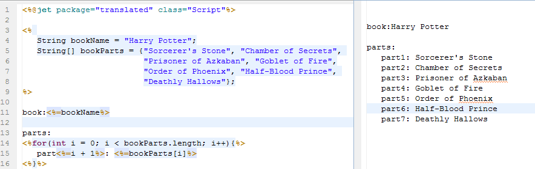
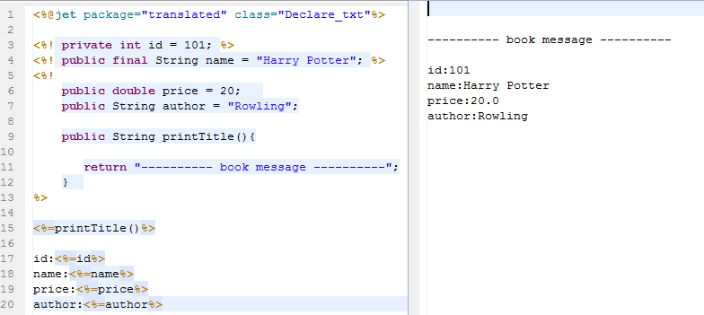
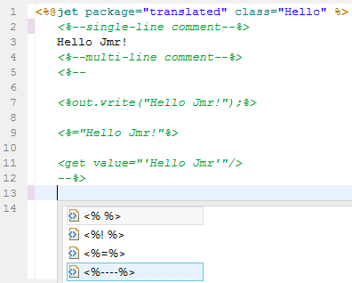
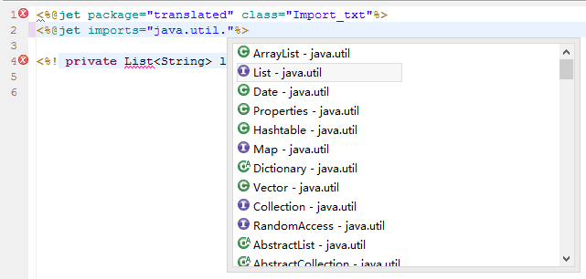
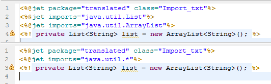

Jmr use eclipse jet as a template, which is a template engine similar to jsp.
This chapter study the basic syntax of the jet, more detail, read the sub chapters.
Similar to Jsp's <% %>, the syntax format of the script:
<%...%>
Similar to Jsp's <%= %>, the syntax format of the expression:
<%=...%>
Example:

Similar to Jsp's <%! %>, the syntax format of the declaration:
<%!...%>
Example:

The comment block is not used for generation, the syntax format of the comment:
<%--...--%>

The Jet directive is used to set template attributes, such as compile directive and import directive.
Compile directive is at the first line of the template, and the template is automatically compiled into the java class, which is similar to jsp compiled into java class. The compile directive specifies the package name and class name of this java class, and developers do not need to care about this.
The syntax format of the compile directive:
<%@jet package="..." class="..." ... %>
Import the java package or class you want to use, the classpath in current project can be used.
Similar to Jsp's <%@page import="..." %>, The syntax format of the import directive:
<%@jet imports="..."%>
Such as import List

